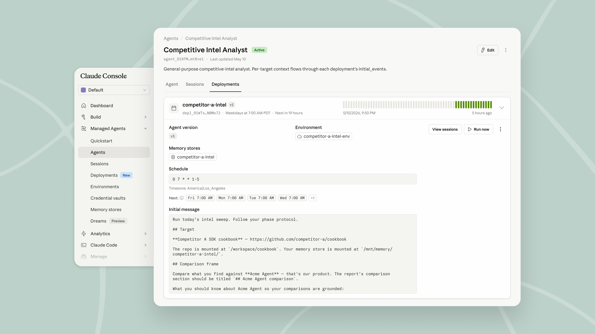
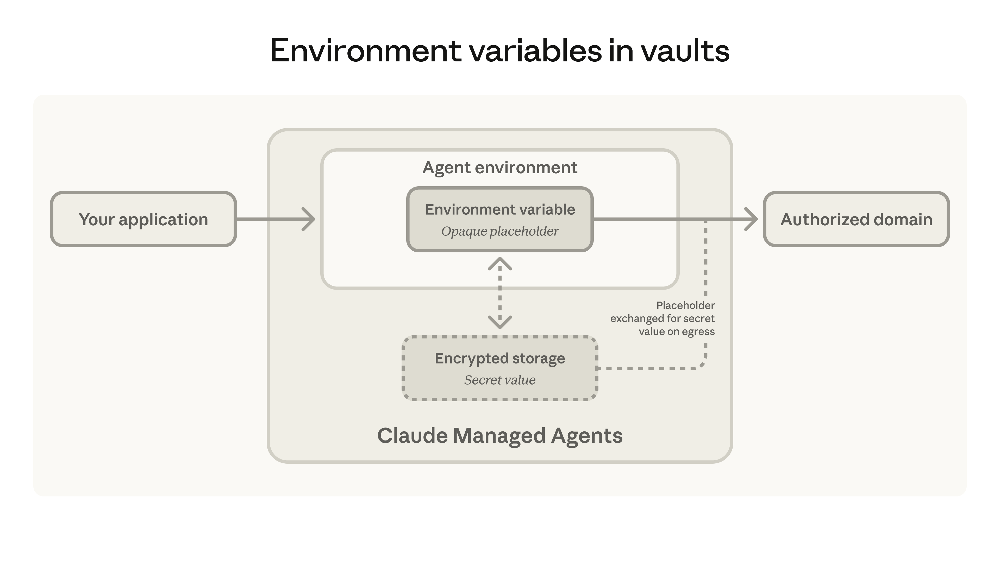

오늘부터 Claude Managed Agents(Claude 관리형 에이전트)를 일정에 따라 실행할 수 있고, CLI 도구와 그 밖의 인증이 필요한 서비스에 안전하게 접근할 수 있습니다. 두 기능 모두 이제 Claude 플랫폼(Claude Platform)에서 퍼블릭 베타(public beta)로 사용할 수 있습니다.
이제 에이전트를 일정에 따라 실행해 반복 업무를 자동으로 처리할 수 있습니다. 예약 배포(scheduled deployment)는 에이전트에 cron 일정을 부여하는 기능입니다. 일정이 실행될 때마다 에이전트는 새 세션을 시작해 작업을 완료하며, 여러분이 직접 만들거나 호스팅해야 할 스케줄러는 필요하지 않습니다.
야간 데이터 동기화, 주간 컴플라이언스 점검, 일일 요약 생성처럼 주기적으로 반복되는 작업에 활용하세요. 배포가 한번 활성화되면 언제든지 일시 중지(pause), 재개(resume), 보관(archive)할 수 있고, 필요할 때 추가 실행을 수동으로 트리거할 수도 있습니다.

여러 팀이 이미 예약 배포를 활용해 반복 업무를 자동화하고 있습니다:
에이전트는 직접 API 호출, CLI, MCP를 통해 외부 시스템에 연결합니다. 이제 저희는 볼트(vaults)를 확장해 환경 변수(environment variables)를 지원합니다. 덕분에 CLI를 비롯한 도구들이 인증된 요청을 보낼 수 있습니다. CLI는 에이전트가 셸을 통해 기존 명령줄 도구를 직접 구동하게 해 주므로, 빠르고 가벼운 통합 경로가 됩니다. API 키를 환경 변수 이름 및 접근 가능한 도메인과 함께 등록하면, 에이전트의 샌드박스(sandbox)에 설치된 CLI가 이 키를 사용해 인증된 API 호출을 할 수 있습니다.
샌드박스에는 자리 표시자(placeholder)만 들어 있기 때문에 에이전트는 실제 키를 절대 보지 못합니다. 실제 키는 네트워크 경계(network boundary)에서 부착되며, 여러분이 허용한 도메인으로 가는 요청에만 부착되므로 키는 승인된 곳으로만 전달됩니다. 키를 변경하려면 볼트에서 값을 업데이트하면 되고, 실행 중인 세션은 다음 호출 시 새 값을 받아 갑니다. HTTP 요청으로 키를 전송하는 대부분의 CLI가 이 방식으로 동작하며, 여기에는 Browserbase, KERNEL, Notion, Ramp, Sentry의 CLI가 포함됩니다. Browserbase와 KERNEL은 Managed Agents에 처음으로 브라우저 기능을 제공해, 에이전트가 다른 도구들과 함께 웹을 탐색하고 상호작용할 수 있게 합니다.

여러 팀이 볼트의 환경 변수를 활용해 에이전트에 인증된 도구에 대한 안전한 접근 권한을 부여하고 있습니다:
더 알아보려면 문서를 살펴보거나, 첫 에이전트를 배포하려면 Claude Console을 방문하세요.